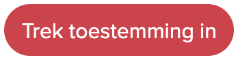
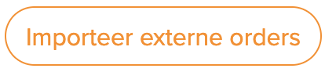

Inleiding
Creëer snel verzendetiketten van jouw Wix-orders en download deze vervolgens allemaal tegelijk vanuit het MyParcel-platform.
Let op! Wix Stores moet als App geïnstalleerd zijn op je webshop om een koppeling met MyParcel te kunnen maken.
1. Installatie
1.1 Nieuwe installatie
Om de koppeling te maken ga je naar MyParcel > Integratie > Externe koppelingen > Wix . Klik op de knop ‘Geef toestemming’.

Vervolgens zal je naar Wix geleid worden. Als je nog niet ingelogd bent op Wix zal je dat alsnog moeten doen. Kies de shop die je wilt koppelen en druk op ‘Add to Site’ om de koppeling te maken.

1.2 Updaten bestaande installatie
Je hoeft een Wix koppeling nooit te updaten, dit wordt automatisch voor je gedaan.
1.3 Veelgestelde vragen over de installatie
Kan ik de toestemming om MyParcel met Wix te koppelen ook weer intrekken?
Het is zeker mogelijik om de koppeling tussen jouw Wix en MyParcel ongedaan te maken. Klik hiervoor op de knop  welke na de installatie zichtbaar wordt via MyParcel > Integratie > Externe koppelingen > Wix . Omdat de MyParcel App niet automatisch gedeinstalleerd wordt op het Wix platform raden we je aan om onze App ook in Wix te verwijderen.2. Configuratie
2.1 Pakketvoorkeuren
De Wix koppeling maakt gebruik van jouw standaard pakketvoorkeuren tijdens het importeren van de Wix orders. Ga naar Account > Shopinstellingen > {jouw shopnaam} > Zendingen . Onder het kopje 'Pakketvoorkeuren' heb je de mogelijkheid om een standaard pakkettype inclusief eventuele verzendopties te selecteren.
2.2 Veelgestelde vragen over de configuratie
Kan ik de Wix koppeling gebruiken voor orders naar alle landen?
Je kunt de Wix koppeling gebruiken voor orders naar Nederland en Europa. Zendingen naar de rest van de Wereld kunnen met PostNL als standaard vervoerder wel geïmporteerd worden, maar de douanegegevens zullen handmatig aangevuld moeten worden.
Kan ik bezorgopties tonen in de checkout van Wix?
Bezorgopties als afhalen en avondbezorging kunnen vanwege beperkingen op het Wix platform niet getoond worden in de checkout.3. Gebruik plugin
3.1 handmatig aanmaken van één of meerdere verzendlabels
Na de installatie van de Wix koppeling zal de knop  zichtbaar zijn in het zendingenoverzicht. Klik hier op om jouw openstaande orders in Wix te bekijken. Hier worden alleen maar orders getoond die in Wix de status ‘Paid’ of Betaald’ hebben. Mocht je meerdere externe koppelingen hebben geïnstalleerd dan kan je tussen de verschillende tabjes schakelen. Op deze pagina heb je de mogelijkheid om order per stuk of in bulk te importeren.
Als je in Wix de ‘Shipping confirmation’ e-mail geactiveerd hebt zal er een e-mail gestuurd worden met Track & Trace informatie. Ook wordt in Wix de status van de zending bijgewerkt.
3.2 Aanpassen van een enkele zending
Geïmporteerde orders worden als conceptzending aangemaakt. Klik op achter de zending om deze te bewerken.
3.3 Veelgestelde vragen over het gebruik van de plugin